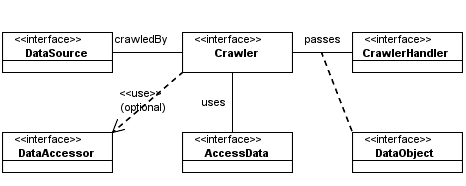
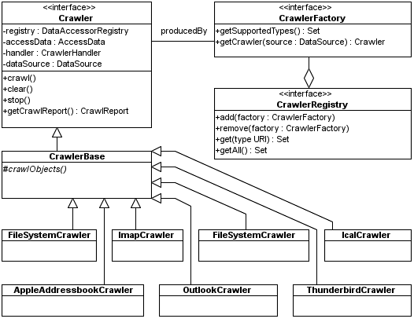

A Crawler is responsible for accessing the contents of a DataSource and reporting the individual resources in it as DataObjects. Examples are FileSystemCrawler, WebCrawler, ImapCrawler. Each produced DataObject contains all the metadata that can be provided by that source type, such as a file name, a last modification date, etc. Instances of FileDataObject or FolderDataObject may also be returned, adding extra semantics to the type of resource found and possibly extra information, such as an InputStream in case of a FileDataObject.
The relationships between classes that are directly involved in the crawling process are depicted on the following diagram.
We have chosen to separate the definition of a data source's domain contained in the DataSource instance from the crawling logic embedded in the Crawler as there may be several alternative crawling strategies for a single source type. Consider for example a generic FileSystemCrawler that handles any file system accessible through java.io.File versus a WindowsFileSystemCrawler using native functionality to get notified about file additions, deletions and changes. Another possibility is to have various Crawler implementations that have different trade-offs in speed and accuracy, which may make sense for certain web-based source types.
The available implementations are summarized in the following diagram:
The DataObjects created by a Crawler are reported to a CrawlerHandler registered at that Crawler. CrawlerHandler implementations must take care of processing the reported DataObjects, e.g. by extracting text and metadata from their streams and indexing the retrieved information. What to do here is entirely up to the application developer.
Furthermore, CrawlerHandler contains methods that let the Crawler notify that a resource has not been changed (when it is crawling incrementally), that a resource has been removed, etc.
Each produced DataObject contains an RDFContainer instance holding all its metadata as determined by the Crawler. Because the choice for an appropriate RDFContainer implementation is typically application-dependent, these RDFContainers are retrieved by the Crawler from the CrawlerHandler. This gives the integrator the ability to choose an appropriate RDFContainer.
This RDFContainer retrieval uses an intermediate step to optimize performance. RDFContainer instantiation may be a costly procedure and should be delayed until the instance is actually needed, i.e. only when a new or changed resource is found. Therefore, the CrawlerHandler returns a RDFContainerFactory rather than a RDFContainer. Such a factory will be retrieved every time a resource is accessed. However, its getRDFContainer method is only invoked when the Crawler (or actually: the DataAccessor used by the Crawler) has detected that a resource is new or changed and that a DataObject will be returned.
The life-time of the reported DataObjects is determined by the CrawlerHandler. They remain usable until someone invokes their dispose method. However, in order to prevent OutOfMemoryErrors or other types of resource overloading, it is advisable to process them in the method that reported them and dispose them at the end of that method.
The following code demonstrates how to setup and use a Crawler. It assumes we have defined a FileSystemDataSource (see DataSources and DataObjects) and are ready to create and start the Crawler.
FileSystemDataSource source = ...
// create an AccessData facilitating incremental crawling
FileAccessData accessData = new FileAccessData();
accessData.setDataFile(new File(...));
// create a Crawler
final FileSystemCrawler crawler = new FileSystemCrawler();
crawler.setDataSource(source);
crawler.setAccessData(accessData);
crawler.setCrawlerHandler(new MyCrawlerHandler());
crawler.setDataAccessorRegistry(new DefaultDataAccessorRegistry());
// start a background thread that performs the crawling
Thread thread = new Thread() {
public void run() {
crawler.crawl();
}
};
thread.setPriority(Thread.MIN_PRIORITY);
thread.start();
This code uses a DefaultDataAccessorRegistry containing all Aperture DataAccessors.
Note that a background thread is created that performs the actual crawling. Typically, Crawler implementations operate in the thread invoking their crawl method, although some Crawlers may necessarily have to create separate threads themselves.
The code for MyCrawlerHandler can look like this:
private static class MyCrawlerHandler implements CrawlerHandler, RDFContainerFactory {
/* --- CrawlerHandler implementation --- */
public RDFContainerFactory getRDFContainerFactory(Crawler crawler, String url) {
return this;
}
public void objectNew(Crawler crawler, DataObject object) {
System.out.println("found new file: " + object.getID());
}
public void objectChanged(Crawler crawler, DataObject object) {
System.out.println("found changed file: " + object.getID());
}
<< remaining methods skipped >>
/* --- RDFContainerFactory implementation --- */
public RDFContainer getRDFContainer(URI uri) {
// returns an in-memory, auto-committing container (simple but slow)
return new SesameRDFContainer(uri);
}
}
Depending on the Crawler implementation the DataObjects may not be directly instantiated by the Crawler. Instead, this job is often delegated to a DataAccessor. Whereas Crawler implementations are created for a specific DataSource type, DataAccessors are typically specific for the URL scheme they support, e.g. "file" or "http".
The rationale for delegating this functionality is:
Here's an example how to use this functionality:
...
DataAccessorFactory accessorFactory;
Set factories = accessorRegistry.get(fileURL.getProtocol());
if (factories != null && !factories.isEmpty()) {
accessorFactory = (DataAccessorFactory) factories.iterator().next();
}
DataObject dataObject = accessor.getDataObjectIfModified(url, source, accessData, params,
containerFactory);
This would enable us to get a dataObject from anything, that's available with a fileURL, provided the registry contains an appropriate DataAccessorFactory implementation.
Crawlers can optionally crawl incrementally. The first time a crawler is invoked, it will simply report all resources. When it is then invoked a subsequent time, it will specifically report new, changed, removed and unchanged resources.
In order for this to work, the Crawler needs to store information about resource names, last modified dates, etc. to perform change detection. This is what an AccessData instance is used for: AccessData specifies a management interface for storing crawling-related information. When no AccessData is set on the Crawler, it will always report all resources as new DataObjects.
A simple in-memory AccessData implementation is available, subclassed by an implementation that can also write this information to a file. One can create custom AccessData classes though, tuned for a specific domain or application. For example, an implementation using some sort of database to lower memory requirements or an implementation closely integrated with the metadata storage to prevent redundancy; the same metadata that is useful to query may also be appropriate for change detection.
An example of this functionality is contained in the implementation of FileSystemAccessor class. It takes a file and compares the actual date of last modification with the date stored within the access data instance. If they are the same, this method returns null, if they aren't the method returns a new data object. The code that's responsible for this decision looks as follows:
// determine when the file was last modified
long lastModified = file.lastModified();
// check whether it has been modified
String value = accessData.get(url, AccessData.DATE_KEY);
if (value != null) {
long registeredDate = Long.parseLong(value);
// now that we now its previous last modified date, see if it has been modified
if (registeredDate == lastModified) {
// the file has not been modified
return null;
}
// It has been modified; register the new modification date.
accessData.put(url, AccessData.DATE_KEY, String.valueOf(lastModified));
}